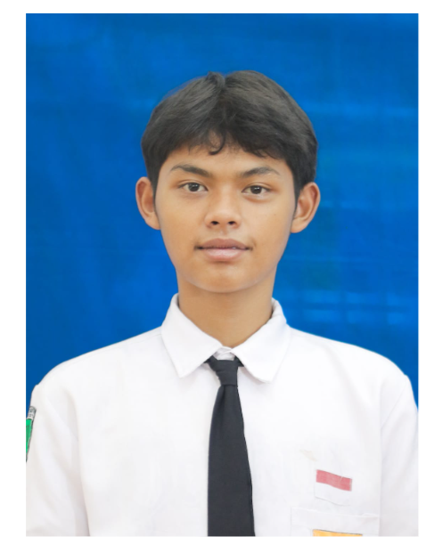

[Profesi / Peran Kamu,: Web Developer & UI/UX Designer]
Saya adalah siswa SMK Negeri 5 Malang jurusan Pengembangan Perangkat Lunak dan Gim (PPLG) yang memiliki minat di bidang teknologi dan pemrograman. Saya senang mempelajari serta membuat website menggunakan HTML, CSS, dan PHP. Saya ingin terus mengembangkan kemampuan dan pengalaman agar bisa menjadi seorang Web Developer profesional di masa depan.

Saat ini saya merupakan siswa aktif di Smkn 5 malang jurusan Rekayasa Perangkat Lunak (RPL). Ketertarikan saya pada dunia teknologi berawal dari rasa penasaran tentang bagaimana sebuah website dan aplikasi di balik layar dapat bekerja membantu aktivitas manusia sehari-hari. Sejak saat itu, saya mulai mendalami dasar-dasar pemrograman web, perancangan database, hingga desain antarmuka (UI/UX) secara mandiri maupun melalui proyek sekolah.
Dalam hal prinsip kerja, saya selalu memegang teguh komitmen untuk terus belajar (continuous learning), teliti dalam menulis kode (attention to detail), dan bertanggung jawab dalam menyelesaikan setiap proyek tepat waktu.
Asal lahir: kota malang, 2009-10-10
[Sekolah]
[ Pengembangan Web, Desain Grafis, Fotografi]
Klik pada kartu proyek untuk melihat detail selengkapnya.
Tertarik untuk berkolaborasi, berdiskusi, atau sekadar menyapa? Jangan ragu untuk menghubungi saya melalui tautan di bawah.